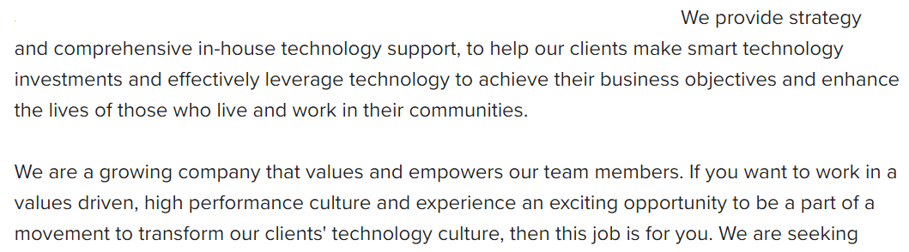

May 29
2023
Writing a Cover Letter
Often a pain point for those caught in the mire of finding a job, writing a cover letter can be seen as a hassle and even a waste of time, especially if you are applying for many jobs a month. You will never be praised by a new employer for your excellently written cover letter, but it could be a deciding factor in whether they select you for the job. If your resume is outstanding, a cover letter may be a simple formality, but if you are an entry level job seeker, or you are in stiff competition, then a convincing cover letter may allow you to shine. The goal is to learn the balance between the time and effort put in to your letter versus what is ultimately necessary. This is something that varies for everyone, and must be learned by experience.
Don't Take the Easy Way Out
If you do any research about writing cover letters online, you will come across the idea of using a template. I would highly discourage the use of a template for any job you actually want to get. Templates can be a good starting point if you are completely new to writing a cover letter, or applying to jobs you aren't excited about or want, but they should never be used for a job you want. After enough practice, writing a cover letter will become much easier and less time consuming, eliminating the need for templates at all. Instead, I would encourage learning how to write an impressive introduction, and how to match phrases from your skillset and resume to the requirements from the job description. The former tells the hiring manager that you understand and value the company (and aren't using a template!), and the latter demonstrates the explicit ability to meet the needs of the company.
In Practice
A cover letter is an advertisement for yourself, as cheesy as that sounds. Your introductory paragraph must sell yourself in two ways: firstly as someone who understands the company you are applying to, and secondly as a professional that meets the company's needs.
Above is an example of a job description. If the application doesn't have anything beyond the role requirements, you can find similar information on the company's website in their About page or Mission Statement. Your first paragraph should reference the qualities they list and explore how you fit into their paradigm. This tells the hiring manager that you're interested, you didn't just send them a template, and you're detail oriented. Finally, sell your positive qualities in a way that demonstrates your personality- the letter need not be totally dry.
You should then spend two to three paragraphs outlining how your skillset meets the needs of the job description specifically. This can reference the exact wording of the role requirements as written, but don't over do it. Every line is vital, you dont want to waste a sentence explaining a skill that is totally irrelevant to the role (something that may happen if you use a template).
Am I Done Yet?
The final paragraph is a victory lap. Restate in broad terms your skillset and how you are a positive fit for the company and it's present needs. Acknowledge explicitly you're excitement for the specific role and company you are applying for. Finally, be gracious and thank the reader for the career opportunity and consideration they are giving to you. With enough practice, writing a cover letter should be second nature, and with consistent effort, you won't need to write them at all.